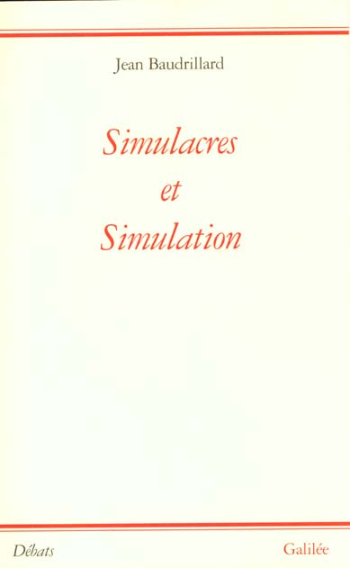

1:14:32 · 10 OPERE
Passare dalla simulazione all'assurdo.
Il filo del discorso
Il contributo cerca di dare forma allo stupore di fronte a una vita pubblica che Dr Divago considera sempre meno comprensibile attraverso i criteri ordinari della ragione. Non è una rassegna neutrale dell’attualità: episodi australiani, americani e italiani vengono collegati da una lettura polemica della comunicazione, dell’educazione e del potere. Il relatore ritiene che il cittadino si abitui a contraddizioni che dovrebbe invece interrogare. Questa tesi organizza la conversazione, ma non dimostra che le notizie concordanti provengano necessariamente da un comando centrale o che una diversa scelta politica riveli una patologia. Il riferimento teorico iniziale è Platone. Nel Sofista la confutazione può liberare dalla presunzione di sapere; nell’allusione al pericolo di una dialettica praticata senza maturità è riconoscibile anche la Repubblica, VII 539b–d. Il punto di Dr Divago è che criticare una tesi non significa dichiarare falso ogni sapere. Persino un autore del quale non si condivide la lettura di Kant può aprire percorsi fecondi: l’esempio di Fichte invita a distinguere l’errore da una produzione culturale interamente priva di valore. Nel passaggio alla politica, la paideia diventa la condizione della partecipazione consapevole. È una appropriazione contemporanea del pensiero platonico, non la dimostrazione che Platone descrivesse una democrazia rappresentativa moderna. La critica delle categorie razziali richiama Martin Luther King e il sogno che i figli siano giudicati per il loro carattere anziché per il colore della pelle: probabile allusione a I Have a Dream. Il relatore contrappone quell’ideale a pratiche e ideologie che, a suo giudizio, ripropongono classificazioni discriminatorie. La verifica distingue però piani diversi: le razze non sono suddivisioni biologiche umane nette, mentre razza sociale, ascendenza genetica e uso amministrativo dei dati non sono sinonimi. Dal solo ricorso a una categoria statistica non segue automaticamente una intenzione razzista. I ricordi personali sulla modulistica medica restano episodi autobiografici. Ilhan Omar è il caso al quale l’intervento torna più volte. Dr Divago contrappone il suo passato di rifugiata alle sue critiche della politica americana, interpretandole come una contraddizione. Si distinguono i dati biografici da questo giudizio: l’arrivo della famiglia negli Stati Uniti nel 1995 non coincide con la naturalizzazione, avvenuta nel 2000 secondo la storia ufficiale della Camera. L’appartenenza religiosa, il velo o la critica a un governo non provano di per sé slealtà, estremismo o sostegno a interessi nemici. Le insinuazioni sulla vita privata non diventano accertamenti nella scheda. Anche l’attività internazionale di un parlamentare nazionale non è assimilabile senza residui all’incarico di un amministratore di condominio: il Congresso ha competenze in politica estera. La discussione sul giuramento mette a confronto Bibbia e Corano e ricorre poi alla serie Stargate SG-1, nella quale gli Ori e il loro libro appartengono alla finzione. Il paragone è una immagine retorica del relatore. Non è una prova che musulmani e personaggi della serie condividano caratteristiche morali o politiche. Il giuramento richiesto ai membri della Camera riguarda la Costituzione: nessuna Bibbia è obbligatoria e la Costituzione esclude prove religiose per ricoprire un ufficio federale. Neppure l’affermazione che il Corano non contenga valori morali è una descrizione testuale sostenibile: per esempio 5,8 chiede giustizia anche verso chi si detesta. Questa precisazione non annulla le differenze fra tradizioni, interpretazioni e ordinamenti storici. Un’altra linea dell’intervento riguarda la somiglianza fra racconti pubblici. I Vangeli sinottici sono evocati per illustrare la ricerca di fonti comuni; la fonte Q resta però una ipotesi storico-letteraria, non un manoscritto disponibile. Il confronto non dimostra da solo un coordinamento occulto delle notizie contemporanee. Il richiamo alla lanterninosofia del Fu Mattia Pascal rende visibile la relazione fra piccoli riferimenti individuali e grandi credenze collettive. Le figure di Schweitzer e Keynes richiamano poi la responsabilità degli ammonimenti ignorati; Le conseguenze economiche della pace è una identificazione probabile per il riferimento a Versailles. L’idea che ascoltare quegli autori avrebbe impedito la Seconda guerra mondiale è un controfattuale del relatore, non un esito storico dimostrabile. La pandemia entra come spartiacque della sfiducia verso istituzioni, linguaggio e informazione. Dr Divago attribuisce alle misure sanitarie un progetto di manipolazione e ricorda il libro di un ministro, probabilmente Perché guariremo di Roberto Speranza. Il titolo e il nome non sono pronunciati nel passaggio disponibile: il collegamento resta probabile. La scheda non assume che le mascherine fossero soltanto un segno scenico o che tutte le finalità sanitarie fossero inventate; le linee guida OMS del 2023 formulavano raccomandazioni basate sul rischio. L’analogia fra società e organismo malato rimane una metafora, senza diagnosi a distanza sui cittadini o su figure pubbliche. Con Simulacres et simulation di Baudrillard il discorso acquista il titolo concettuale che lo sostiene: Dr Divago interpreta il simulacro come una sostituzione del reale e lo collega a relativismo, nichilismo e distruzione dell’individuo. È la sua lettura, non una confessione di intenzioni manipolatorie da parte di Baudrillard. Il problema della partecipazione politica viene poi affrontato con i risultati del quinto distretto del Minnesota nel 2020. I 255.924 voti di Omar sono confermati; sono però voti di un distretto, non di tutto lo Stato. Confrontarli con l’intera popolazione del Minnesota non misura l’astensione. Il candidato Michael Moore compare nel prospetto ufficiale sotto Legal Marijuana Now: il nome non basta a identificarlo con il documentarista omonimo. Nella parte finale il giudizio si fa più aspro attraverso il confronto fra Omar e Ayaan Hirsi Ali, i riferimenti alla violenza terroristica e le accuse rivolte ai sostenitori della causa palestinese. Quei giudizi restano attribuiti e non definiscono le intenzioni di tutti i musulmani, somali, palestinesi o manifestanti. La formazione storica di una identità nazionale non rende inesistente una popolazione; il nome Palestina è documentato ben prima degli anni Sessanta. È inoltre inesatto considerare il riconoscimento dei discendenti esclusivo dei rifugiati palestinesi: anche l’UNHCR applica forme di protezione derivata per preservare l’unità familiare, pur entro regole e mandati distinti. Le vittime civili, in particolare i bambini, mantengono la protezione umanitaria indipendentemente dalle colpe attribuite alle parti. Né i confronti con altre guerre né cifre non verificate cancellano questa distinzione. La conclusione ritorna allo smarrimento iniziale: per Dr Divago la simulazione conduce all’assurdo quando il cittadino perde gli strumenti per riconoscere le contraddizioni del proprio mondo.
I libri nel discorso

Sofista
Copertina: Einaudi · Piccola Biblioteca Einaudi Nuova serie 402, 2008 · cura e traduzione Bruno Centrone
Immagine autentica dell’opera, controllata visivamente; l’edizione di riferimento non è attribuita al filmato.
Il relatore nomina il Sofista e la catarsi dalla presunzione di sapere. Riscontro testuale con 230b–e.
Passaggio 9:58 ↗ · Fonti e libro ↗
La Repubblica
Identificazione probabile
Copertina: Laterza · La Repubblica · edizione con testo a fronte di riferimento
Immagine associata all’ISBN di riferimento e controllata visivamente; edizione e traduzione non identificate come quelle citate o lette nel video.
L’avvertenza sulla confutazione usata prima della maturità è compatibile con VII 539b–d; titolo non pronunciato, allusione probabile verificata sul testo.
Passaggio 12:40 ↗ · Fonti e libro ↗
I Have a Dream (discorso del 28 agosto 1963)
Identificazione probabile
Copertina dell’edizione illustrata con estratti del discorso, Kadir Nelson: Anne Schwartz Books / Penguin Random House, 14 gennaio 2025; illustrazioni di Kadir Nelson; edizione illustrata con estratti del discorso
La voce identifica il discorso del 1963, non una lettura del libro per bambini. Immagine dell’edizione illustrata 2025 dello stesso discorso: non copertina del documento originale e non edizione citata. La guida dell’editore descrive l’edizione del 2012 come estratto illustrato; non trasferiti ISBN o data 2012 alla copertina 2025.
Parafrasi del sogno sui figli giudicati per il carattere e non il colore della pelle. Titolo non pronunciato, identificazione probabile con il discorso del 28 agosto 1963.
Passaggio 22:31 ↗ · Fonti e libro ↗
Il fu Mattia Pascal
Copertina: Newton Compton · Classici Pop 23 · edizione integrale a cura di Sergio Campailla
Immagine autentica dell’opera, controllata visivamente; l’edizione di riferimento non è attribuita al filmato.
Richiamo riconoscibile alla lanterninosofia, con titolo romanzo reso dalla trascrizione automatica come fumattia pascal.
Passaggio 33:24 ↗ · Fonti e libro ↗
Bibbia
Copertina: San Paolo, 2014 · Nuova Versione dai Testi Antichi · edizione di riferimento
Testo biblico richiamato come termine di paragone del giuramento; nessun libro canonico o edizione precisa individuata.
Passaggio 37:02 ↗ · Fonti e libro ↗
Corano
Copertina: BUR Classici, edizione aggiornata
Edizione con introduzione, traduzione e commento di Alessandro Bausani, a cura di Layla Mustapha Ammar. Anno della ristampa non dedotto dalla copertina; nessuna edizione attribuita al video.
Il libro musulmano discusso nel contesto del giuramento è il Corano. Il giudizio del relatore sui suoi valori non sostituisce l’esame del testo; nessuna edizione identificata.
Passaggio 37:02 ↗ · Fonti e libro ↗Stargate SG-1
Fotografia della serie · sito Richard Dean Anderson: Fotografia promozionale pubblicata sul sito di Richard Dean Anderson: O’Neill, Jackson, Carter e Teal’c davanti al portale. Non è una copertina di romanzo, una confezione video o una prova dell’episodio ricordato.
Immagine autentica dell’opera, controllata visivamente; l’edizione di riferimento non è attribuita al filmato.
Il nome della serie è trascritto Stargates; il successivo riferimento agli Ori permette di identificare SG-1, distinta dal film Stargate. Il libro degli Ori è un oggetto narrativo, non una pubblicazione separata.
Passaggio 38:10 ↗ · Fonti e libro ↗
Le conseguenze economiche della pace
Identificazione probabile
Copertina: Adelphi · L’oceano delle storie · 2007 · traduzione di Franco Salvatorelli
Immagine autentica dell’opera, controllata visivamente; l’edizione di riferimento non è attribuita al filmato.
Keynes e gli ammonimenti dopo Versailles richiamano probabilmente questa opera; titolo non pronunciato.
Passaggio 42:22 ↗ · Fonti e libro ↗
Perché guariremo. Dai giorni più duri a una nuova idea di salute
Identificazione probabile
Edizione ampliata successiva · Solferino 2024: Copertina ufficiale della SUCCESSIVA EDIZIONE AMPLIATA Solferino 2024, 320 pagine, ISBN 9788828214427: fondo chiaro, autore rosso e dicitura edizione originale con capitoli integrativi. Non è la copertina Feltrinelli 2020 e non è attribuita al video del contesto 2023.
Immagine autentica dell’opera, controllata visivamente; l’edizione di riferimento non è attribuita al filmato.
Il relatore allude al libro di un ministro della Salute senza nome o titolo. Contesto 2024 compatibile con Perché guariremo, ma non sufficiente a una identificazione certa: proposta probabile da confermare.
Passaggio 47:14 ↗ · Fonti e libro ↗
Simulacres et simulation
Copertina dell’edizione francese, tiratura non determinata: Galilée, collection Débats, ISBN 9782718602103; prima edizione 1981, ristampe successive
Il catalogo BnF distingue 1981 da facsimile 1995 con il medesimo ISBN. La fotografia della libreria non prova quale tiratura sia illustrata né quale volume fosse usato nel video; non si attribuisce alla fotografia una data di stampa non verificata.
Dopo un inizio di titolo abbandonato, il relatore pronuncia simulacra e simulazioni attribuendolo a Baudrillard. Normalizzato il titolo francese, senza inventare una edizione italiana.
Passaggio 54:19 ↗ · Fonti e libro ↗